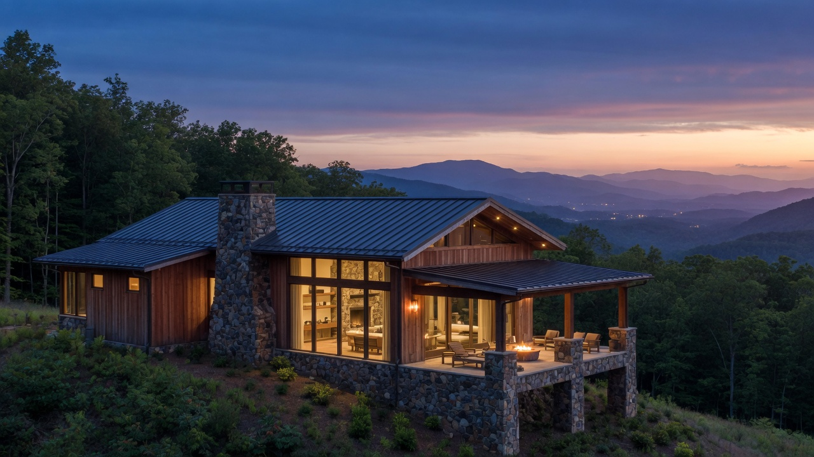
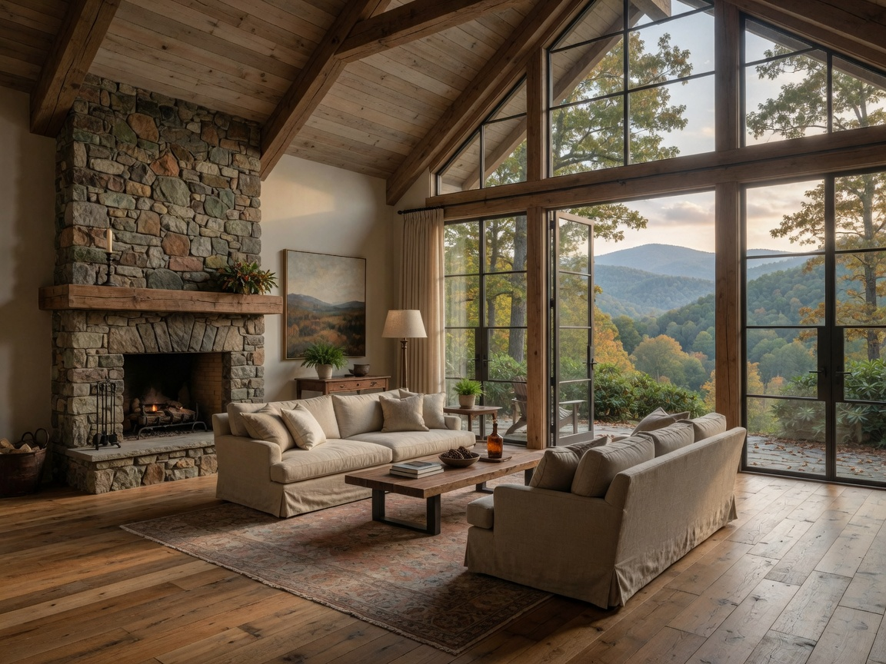
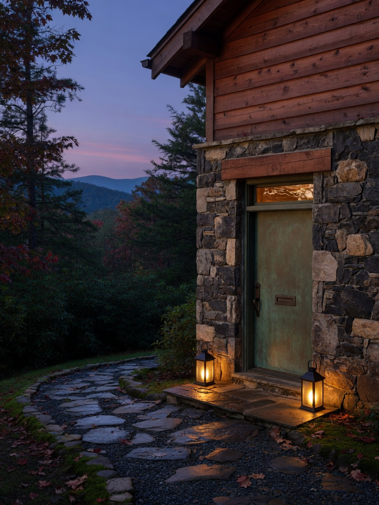

The land
Grade, aspect, canopy, rock, view, and access decide more than any drawing. We begin on site.

Landrum, South Carolina · The Blue Ridge escarpment
A principal-led studio constructing a small number of custom residences across Upstate South Carolina and Western North Carolina.
The studio
The Blue Ridge does not ask for spectacle. It asks for a house that sits correctly — on the ridge, in the trees, in the weather — and is made well enough to last.
Bridgeman Builders is the practice of Corey Bridgeman. We take on few projects so that the principal remains on the work, from the first walk of the land through the last hardware install.

What we build
Custom residences in stone, timber, plaster, and glass. Houses designed with the architect — or assembled with the right one — then built with a small network of trades who still work by hand.
We are not a production builder with a custom division. The work is selective by design.
The work, in four movements
Grade, aspect, canopy, rock, view, and access decide more than any drawing. We begin on site.
Budget is treated as a design tool, not a surprise. The house is refined until it belongs.
Local stone. Honest timber. Assemblies that perform in Carolina weather. Corey on the work.
A finished house is not the end of the relationship. We walk it, document it, and remain the number you call.
Visual direction
These photographs describe the standard we are building toward. They are concept images for this study — not a claim of completed Bridgeman projects.
Territory
Based in Landrum, we work the foothills and highlands on both sides of the state line — close enough to be on site, selective enough to protect the work.

Principal
The client works with the builder, not a rotating cast.
Corey established Bridgeman Builders as a studio, not a pipeline. The promise is simple: a house of consequence, a process you can follow, and a principal who stays on the job.
Inquire
A conversation, not a funnel. Tell us about the site, the life you want in the house, and the timing.